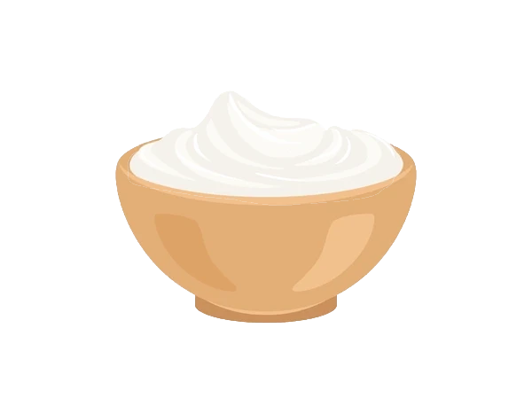

Description
This Greek salad is a delicious combination of romaine lettuce, sliced cucumbers, chopped tomatoes, pitted black olives (or Kalamata olives), red and green bell peppers, a red onion, and feta cheese. The dressing is a simple mixture of olive oil, a juiced lemon, dried oregano, and ground black pepper.
Ingredients
- romaine lettuce- rinsed, dried and chopped 1 piece
- cucumber, sliced 1 piece
- large tomatoes, chopped 2 piece
- pitted black olives 1 can (6 ounce)
- green bell pepper, chopped 1 piece
- red bell pepper, chopped 1 piece
- red onion, thinly sliced 1 piece
- crumbled feta cheese 1 cup
- olive oil 6 tablespoons
- lemon, juiced 1 piece
- dried oregano 1 teaspoon
- ground black pepper to taste
Steps
- Combine romaine, cucumber, tomatoes, olives, bell peppers, and red onion in a large bowl; sprinkle with feta cheese.
- Whisk olive oil, lemon juice, oregano, and black pepper together in a small bowl. Pour dressing over salad, toss well to combine, and serve.
- Pour dressing over salad, toss well to combine, and serve.
That's all folks!